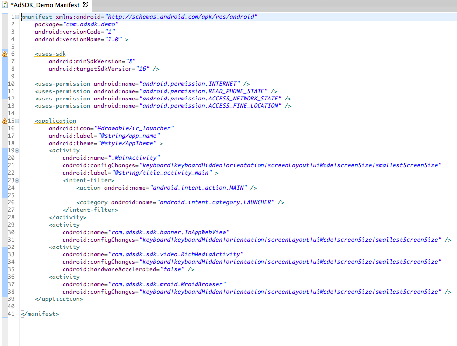
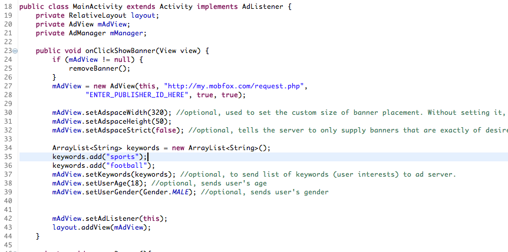
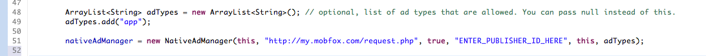
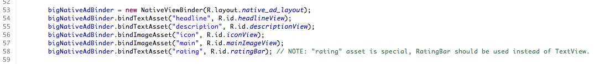
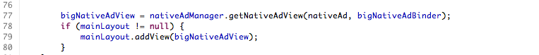

The following document provide detailed instructions on how to integrate the MobFox Android SDK into your Android projects. The MobFox SDK is capable of displaying traditional Banner Ads, MRAID Ads and Fullscreen Ads- videos or static interstitials.
The downloaded ZIP contains the following files:
<uses-permission android:name="android.permission.INTERNET" /> <uses-permission android:name="android.permission.ACCESS_NETWORK_STATE" /> <uses-permission android:name="android.permission.ACCESS_FINE_LOCATION" /> <activity android:name="com.adsdk.sdk.banner.InAppWebView" android:configChanges="keyboard|keyboardHidden|orientation|screenLayout|uiMode|screenSize|smallestScreenSize" /> <activity android:name="com.adsdk.sdk.video.RichMediaActivity" android:configChanges="keyboard|keyboardHidden|orientation|screenLayout|uiMode|screenSize|smallestScreenSize" android:hardwareAccelerated="false" /> <activity android:name="com.adsdk.sdk.mraid.MraidBrowser" android:configChanges="keyboard|keyboardHidden|orientation|screenLayout|uiMode|screenSize|smallestScreenSize" />
mAdView = new AdView(this, "http://my.mobfox.com/request.php","ENTER_PUBLISHER_ID_HERE", true, true); mAdView.setAdListener(this); layout.addView(mAdView);
mAdView.setAdspaceWidth(320); //optional, used to set the custom size of banner placement. Without setting it, the SDK will use default sizes. mAdView.setAdspaceHeight(50); mAdView.setAdspaceStrict(false); //optional, tells the server to only supply banners that are exactly of desired size. Without setting it, the server could also supply smaller Ads when no ad of desired size is available.
ArrayListkeywords = new ArrayList (); keywords.add("sports"); keywords.add("football"); mAdView.setKeywords(keywords); //optional, to send list of keywords (user interests) to ad server. mAdView.setUserAge(18); //optional, sends user's age mAdView.setUserGender(Gender.MALE); //optional, sends user's gender
mManager = new AdManager(this,"http://my.mobfox.com/request.php", "ENTER_PUBLISHER_ID_HERE", true); mManager.setListener(this); mManager.requestAd();
mManager.setInterstitialAdsEnabled(true); //enabled by default. Allows the SDK to request static interstitial ads. mManager.setVideoAdsEnabled(true); //disabled by default. Allows the SDK to request video fullscreen ads. mManager.setPrioritizeVideoAds(true); //disabled by default. If enabled, indicates that SDK should request video ads first, and only if there is no video request a static interstitial (if they are enabled).
mManager.showAd();It is advised to call this method when listener method adLoadSucceeded() is called.
You should be able to see test ads now. Once you are ready to receive live ads, please log into your MobFox Account, navigate to "Sites & Apps" and click on "Request Activation". We will review and activate your app for live ads within 24 hours. Note: Please always clear memory before showing Ads and restore your apps orientation after an Ad is shown. If you would like to test your SDK integration with one of our Test Publisher IDs, please click here.
New features in this release:
AdView(Context, "http://my.mobfox.com/request.php","PUBLISHER_ID", Location, Animation)The Fullscreen Ad constructor argument "Location" lets the SDK use the current location for better targeting Ads.
AdManager(this,"http://my.mobfox.com/request.php", "http://my.mobfox.com/vrequest.php", "PUBLISHER_ID", true)Once a new Ad has been loaded, the following AdListener method will be called:
public void adLoadSucceeded(Ad advertisement)If the Ad couldn't load, the following AdListener method will be called:
public void noAdFound(Ad advertisement)For vAds, you will be notified when the vAd activity has finished
public void adClosed(Ad advertisement, boolean completed)You will also be notified when the vAd activity starts
public void adShown(Ad advertisement, boolean succeeded)
Native ads allow you to easily design the layout of ads yourself, to make them feel and look like your original content.
nativeAdManager = new NativeAdManager(this, "http://my.mobfox.com/request.php", true, "ENTER_PUBLISHER_ID_HERE", this, adTypes);adTypes is a list limiting allowed ad types (see n_type parameter here). You can skip this parameter passing null. 
- public void adLoaded(NativeAd ad) - called when the Native Ad is successfully loaded. - public void adFailedToLoad() - called when the SDK cannot fetch a Native Ad, possibly no ad is available on server. - public void impression() - called when the Native Ad is shown for the first time. - public void adClicked() - called when the user clicks the Native Ad.
nativeAdManager.requestAd();
Create new layout with TextViews to hold TextAssets and ImageViews to hold ImageAssets. If you want to display stars rating within the ad, add also the RatingBar. To learn more about available Assets, please see here.
bigNativeAdBinder = new NativeViewBinder(R.layout.native_ad_layout);
bigNativeAdBinder.bindTextAsset("headline", R.id.headlineView);
bigNativeAdBinder.bindTextAsset("description", R.id.descriptionView);
bigNativeAdBinder.bindImageAsset("icon", R.id.iconView);
bigNativeAdBinder.bindImageAsset("main", R.id.mainImageView);
bigNativeAdBinder.bindTextAsset("rating", R.id.ratingBar);

bigNativeAdView = nativeAdManager.getNativeAdView(nativeAd, bigNativeAdBinder);
baseAdapterUtil = new BaseAdapterUtil(3, 5);
@Override
public int getCount() {
int originalCount = super.getCount();
return baseAdapterUtil.calculateShiftedCount(originalCount);
}
@Override
public int getViewTypeCount() {
int originalCount = super.getViewTypeCount();
return originalCount + 1; // +1 for native ad view type.
}
@Override
public int getItemViewType(int position) {
if (baseAdapterUtil.isAdPosition(position)) {
return getViewTypeCount() - 1; // to return native ad view as last type.
} else {
return super.getItemViewType(position); // return your original view type. If you need position index, use shifted position obtained by baseAdapterUtil.calculateShiftedPosition(originalPosition)
}
}
@Override
public String getItem(int position) {
int shiftedPosition = baseAdapterUtil.calculateShiftedPosition(position);
return super.getItem(shiftedPosition);
}
@Override
public View getView(int position, View convertView, ViewGroup parent) {
if (baseAdapterUtil.isAdPosition(position)) {
// return native ad view
} else {
return super.getView(position, convertView, parent); //return original view
}
}
Only request native ads when they are likely to be seen by the user. If your list view has many rows, initially it is not necessary to request ads that would be displayed near the bottom. You might want to keep a small queue with Native Ads to be able to display them quickly when the user scrolls down your list view.
Instead of creating Native Ad View every time getView() should return ad, it is better to save each created Native Ad view and reuse it when user scrolls back.
The SDK comes with a set of custom events implemented. If you want to add support for some other ad network, you can fork the SDK and add needed classes yourself. Take a look at package com.adsdk.sdk.customevents and use the already implemented custom events as a reference. All you need to do is implement classes for your custom event (banner, fullscreen or both) and set everything accordingly in your MobFox account.
public void loadBanner(Context context, CustomEventBannerListener customEventBannerListener, String optionalParameters, String trackingPixel, int width, int height)method. In it, you will have to call
listener = customEventBannerListener; this.trackingPixel = trackingPixel;and create banner view of your chosen ad network. If it requires some kind of id/ad key, you can use optionalParameters string for passing this data. All that is left is calling of appropriate listener methods:
void onBannerLoaded(View bannerView)- called after successful banner load, passing the banner view of your chosen ad network.
void onBannerFailed()- called when the banner fails to load.
void onBannerExpanded()- called when the banner expands or opens fullscreen view, usually after click.
void onBannerClosed()- called when the ad closes.
Remember to also call reportImpression()method when the banner is shown. In most cases, the place where you call onBannerLoaded will be good. You may also want to override the
destroy()method (remember to also call
super.destroy()method). With this, your custom event banner implementation is done.
public void loadFullscreen(Activity activity, CustomEventFullscreenListener customEventFullscreenListener, String optionalParameters, String trackingPixel)method. There, you will need to call
listener = customEventFullscreenListener; this.trackingPixel = trackingPixel;and load interstitial ad of your chosen ad network. If it requires some kind of id/ad key, you can use optionalParameters string for passing this data. You will also need to override
public void showFullscreen()method, showing the loaded interstitial. All that is left is calling of appropriate listener methods:
void onFullscreenLoaded(CustomEventFullscreen fullscreen) -called when ad is successfully loaded, passing your custom event fullscreen class. void onFullscreenFailed() -called when fullscreen fails to load. void onFullscreenOpened() -called when the fullscreen ad is opened. void onFullscreenClosed() -called when the fullscreen ad is closed. void onFullscreenLeftApplication() -called when the fullscreen ad leaves application, usually after click.Also remember to call
reportImpression()method when the ad is shown. In most cases the place in the code where you call onFullscreenOpened will be fine. You may also want to override the
finish()method (remember to also call
super.finish()method) that will be called when this fullscreen ad is no longer necessary. And this is it, no other steps are required to implement custom event fullscreen.
public void createNativeAd(final Context context, CustomEventNativeListener listener, final String optionalParameters, String trackingPixel)method. There, you will need to call
this.listener = listener; addImpressionTracker(trackingPixel);and load native ad of your chosen ad network. If it requires some kind of id/ad key, you can use optionalParameters string for passing this data. When the native ad of your chosen ad network is received, you will need to match its assets to MobFox native ad assets (like headline text asset or icon image asset). For conveniece you can use the following methods:
addTextAsset(String type, String asset)
addImageAsset(String type, String url)along with the list of MobFox native ad assets provided in NativeAd class. When you are finished, use the method
isNativeAdValid(NativeAd ad)to check if the ad was properly loaded and all required assets are available. You will also need to call appropriate listener methods:
void onCustomEventNativeLoaded(NativeAd customNativeAd) -called when ad is successfully loaded, passing your custom event native class. void onCustomEventNativeFailed() -called when fullscreen fails to load or isNativeAdValid method returns false.You may also want to override the
handleClick()and
prepareImpression(View view)methods, if your chosen SDK requires it. With this implementation is finished, no other steps are required to implement custom event native ad.